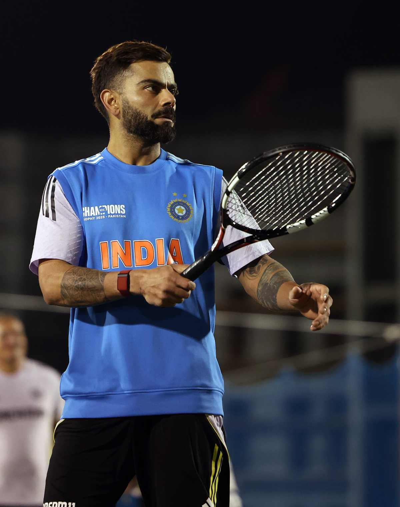
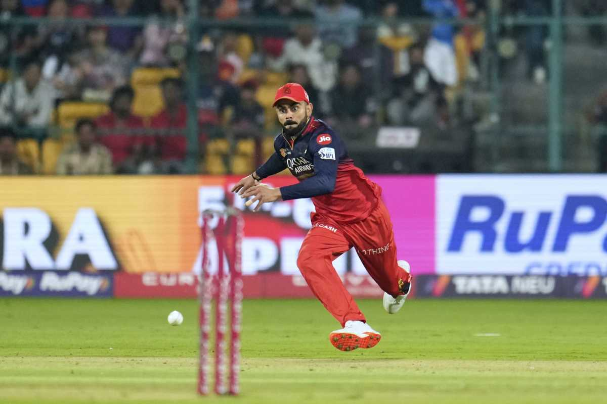

| HOME | ACHIEVEMENT | LIFE JOURNEY | GALLERY | CONTACT US |
|
  |
🌟 Major Milestones & RecordsCategoryAchievement/RecordODIs (One Day Internationals)Fastest batsman to score 8,000, 9,000, 10,000, 11,000, 12,000, and 13,000 runs (in terms of innings).Most centuries in ODI history (50), surpassing Sachin Tendulkar's 49.Highest average in ODIs (minimum 100 innings).T20Is (Twenty20 Internationals)First player to complete 4,000 T20I runs.Highest run-scorer in T20I history.Most 50+ scores in T20I history.All FormatsMost runs in a single calendar year (in international cricket) by an Indian player (2,818 runs in 2017).Only cricketer to average over 50 in all three formats (Tests, ODIs, and T20Is) simultaneously (achieved multiple times).Second-most centuries in international cricket (behind only Sachin Tandulkar).🏆 ICC Tournaments & Awards🏆ICC ODI Cricketer of the Year: 2012, 2017, 2018 (Most wins for the award).ICC Test Player of the Year: 2018.Sir Garfield Sobers Trophy (ICC Cricketer of the Year): 2017, 2018.ICC Men's ODI Team of the Year: (Named 8 times, including as Captain).ICC Men's T20I Team of the Decade: (2011–2020).ICC Men's Test Team of the Decade: (2011–2020).Player of the Tournament in the ICC T20 World Cup: 2014 & 2016 (Only player to win it twice).🇮🇳 Captaincy Records (Team India)Most Test victories for India as captain (40 wins).First Indian captain to win a Test series in Australia (2018-19).Highest percentage of wins as India's Test captain (minimum 20 Tests).Led India to the Number 1 ranking in Test cricket for a prolonged period.🥇 Other Notable AccoladesWisden Leading Cricketer in the World: 2016, 2017, 2018.Arjuna Award (2013).Padma Shri (India's fourth-highest civilian award, 2017).Rajiv Gandhi Khel Ratna (India's highest sporting honour, 2018). |